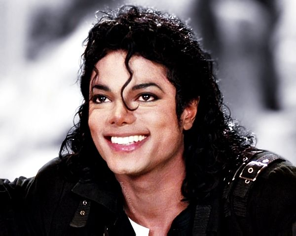

Michael Jackson
Conheça um pouco sobre o Rei do Pop!
Sobre o artista
Michael Joseph Jackson, nascido em 28 de agosto de 1958 na cidade de Gary, Indiana, foi um cantor, compositor, dançarino e filantropo. É considerado o Rei do Pop, título este que recebeu de sua amiga e atriz Elizabeth Taylor, em uma premiação em 1989.
Foi um dos ícones culturais mais importantes e influentes de todos os tempos e um dos maiores artistas da história da música. Suas contribuições para a música, a dança e a moda por mais de quatro décadas, juntamente com a divulgação de sua vida pessoal, fizeram dele uma figura global na cultura popular.
Infância
Michael era o sétimo de nove filhos de Joseph e Katherine Jackson. A família inteira – incluindo os irmãos mais velhos, Rebbie, Jackie, Tito, Jermaine, LaToya e Marlon, e os mais novos, Randy e Janet – viveram juntos em uma pequena casa de dois quartos, e o pai sustentava a casa a duras penas trabalhando em uma usina siderúrgica. Por vontade da mãe, mas contra o desejo do pai, as crianças tornaram-se Testemunhas de Jeová e passaram a praticar a evangelização de porta em porta.
De acordo com as regras rígidas do pai, as crianças eram mantidas trancadas em casa enquanto ele trabalhava até tarde da noite. Entretanto, as crianças escapavam frequentemente para as casas dos vizinhos, onde cantavam e faziam música.Os irmãos mais velhos mexiam na guitarra do pai Joseph sem sua permissão enquanto ele estava trabalhando. Até que um dia Joseph tomou consciência do talento de seus filhos e resolveu ganhar dinheiro com isso, e assim sair de Gary e ir para a Califórnia, para mais tarde serem contratados pela Motown. Na Motown, Michael e seus irmãos gravaram vários álbuns, o que lhes rendeu fama mundial. Com apenas treze anos, Michael, através dos Jackson 5, havia colocado quatro canções no topo das paradas: "I Want You Back", "ABC", "I'll Be There", "The Love You Save".
Michael logo chamou a atenção do público por seu carisma e habilidades no palco, iniciou sua carreira solo em 1971 quando ainda estava na Motown, quando lançou os álbuns Got to Be There, Ben, Music & Me e Forever, Michael, todos com pelo menos um sucesso mundial. A partir de 1973 a popularidade do grupo começou a diminuir, embora eles tivessem sucessos razoáveis como "I Am Love" e "Dancing Machine". Neste último, durante as apresentações, Jackson simulava um robô dançando. A dança tornou-se bastante popular no mundo todo.
Relações
Em 26 de maio de 1994, Jackson casou-se com Lisa Marie Presley, numa cerimônia na República Dominicana. A primeira aparição pública do casal foi em setembro durante o MTV Video Music Awards do ano. Eles entraram no palco, seguiram por uma passarela e se beijaram. O matrimônio durou dois anos.
Em novembro de 1996, o astro se casou com a enfermeira dermatologista Debbie Rowe, com quem teve dois filhos. O primeiro, Michael Joseph Jackson Jr., nasceu naquele ano. No ano seguinte, Rowe deu à luz Paris Katherine Jackson. A enfermeira abriu a mão de todos os direitos maternos e entregou a guarda das crianças a Jackson, gerando grande polêmica.
Últimos anos
Michael iniciou hiatus na sua carreira em 2001, quando fez seu último show em Nova York. Muito especulou-se sobre a pausa na carreira, como problemas com remédios controlados e débitos, que quase o levaram a vender seu famoso rancho, Neverland. Durante esse período tabalhou em materiais para futuros albuns e na criação de seus filhos.
Em 2009 foi anunciado seu retorno aos palcos,com uma turnê de 50 shows ao redor do mundo. Neste mesmo período foi iniciado a gravação do documentário "This Is It", que acompanharia os ensaios, preparativose shows da turnê.
Com a intensa preparação para 25 de junho de 2009, foi noticiado que Michael Jackson sofreu uma parada cardíaca em sua casa, na vizinhança de Holmby Hills, Los Angeles. Os serviços de emergência médica socorreram o cantor em sua casa, na tentativa de reanimá-lo. Porém, como Jackson se encontrava em estado de coma profundo, ele foi levado às pressas para o Ronald Reagan UCLA Medical Center, o hospital universitário da Universidade da Califórnia em Los Angeles (UCLA). Desde sua internação, rumores haviam se espalhado pela imprensa confirmando sua morte. Sua morte teve uma repercussão internacional instantânea, sendo motivo de preocupação por parte dos fãs em muitas partes do mundo. A morte foi atribuída a uma overdose de fármacos que Michael Jackson tinha tomado nas horas anteriores para dormir, e administrados pelo seu médico pessoal Dr. Conrad Murray. O último a ser administrado foi o anestésico Propofol, sendo que 10 minutos mais tarde o Rei do Pop estava em paragem cardio-respiratória.
Legado
Jackson foi chamado de "rei do pop" porque transformou a arte dos videoclipes e abriu o caminho para a música pop moderna. Durante grande parte da carreira de Jackson, ele teve uma influência mundial incomparável sobre a geração mais jovem. Suas músicas e vídeos, como o videoclipe de Thriller, promoveram a diversidade racial na lista da MTV e direcionaram seu foco do rock para a música pop e o R&B, moldando o canal de uma forma que se mostrou duradoura.
Ele é reconhecido como o artista de maior sucesso de todos os tempos pelo Guinness World Records, com vendas estimadas de mais de 500 milhões de discos em todo o mundo. Também é considerado um dos ícones culturais mais significativos do século XX e suas contribuições à música, dança e moda, juntamente com a divulgação de sua vida pessoal, fizeram dele uma figura global na cultura popular por mais de quatro décadas.
Para ouvir uma playlist no Youtube com os maiores sucessos de Michael Jackson, clique aqui.